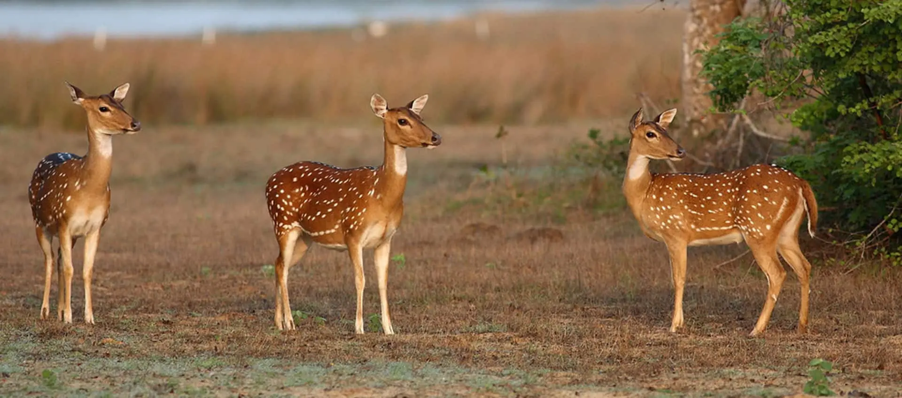
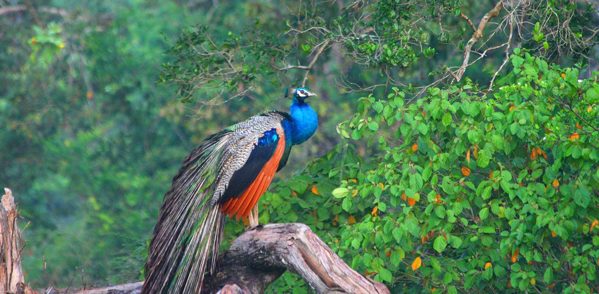
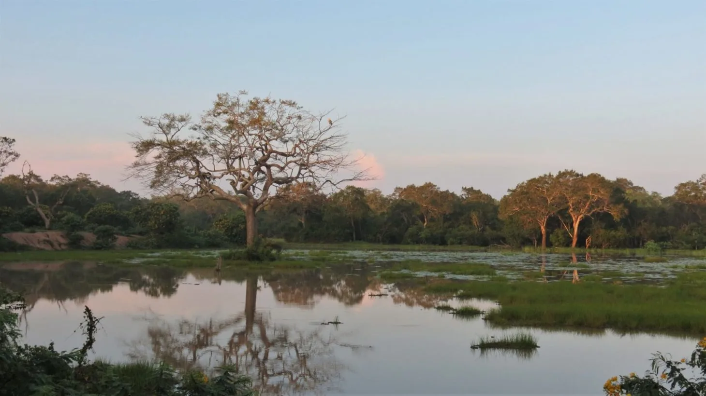
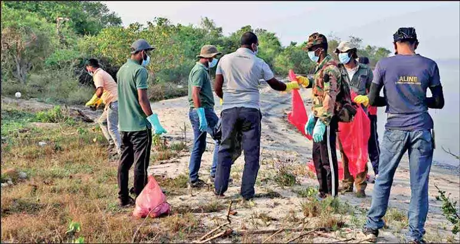
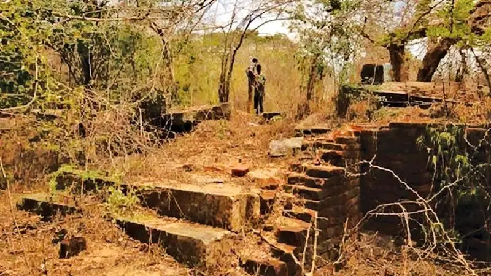
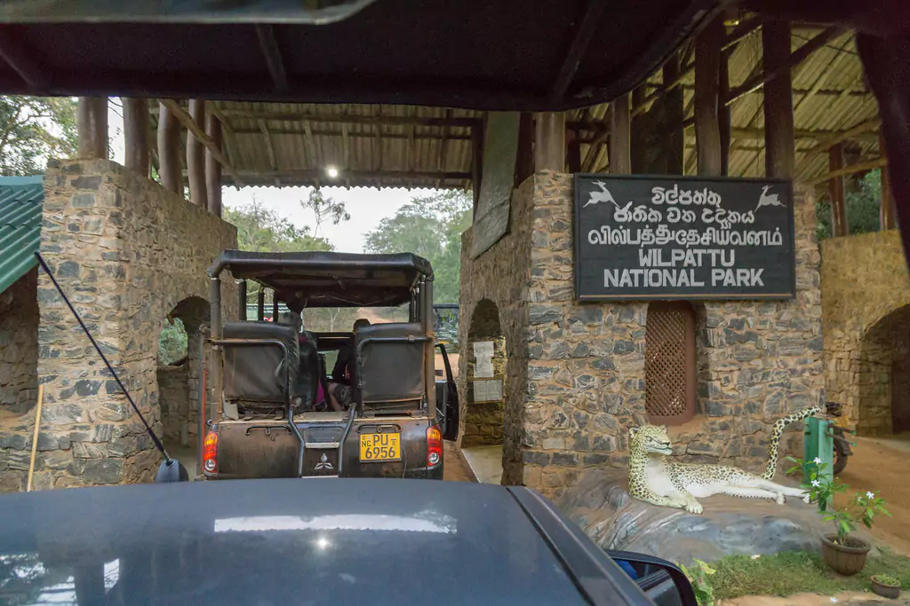

Wildlife Wonderland
Biodiversity
Wilpattu National Park boasts a rich biodiversity that encompasses a variety of habitats, from dense forests to open grasslands. The park is home to a wide array of plant and animal species, making it a haven for nature enthusiasts and wildlife photographers alike.
Click here to learn More!Signature Species
Among the remarkable fauna inhabiting Wilpattu, the elusive Sri Lankan leopard takes center stage. Other iconic species include elephants, sloth bears, and a plethora of bird species that add vibrancy to the park's ecological tapestry.
Click here to learn More!Vegetation
The park's vegetation is equally captivating, featuring a mosaic of dry zone and evergreen forests. Explore the unique flora, including rare orchids, towering trees, and vibrant shrubs that contribute to the park's ecological significance.
Click here to learn More!Historical and Cultural Significance
Conservation Efforts
Discover the ongoing conservation efforts dedicated to preserving Wilpattu's ecological balance and cultural heritage. Learn about initiatives aimed at safeguarding the park for future generations, emphasizing the delicate harmony between human and natural history.
Click here to learn More!Ancient Ruins
Wilpattu is not only a sanctuary for wildlife but also a treasure trove of ancient ruins. Explore the remnants of historic structures dating back to the reign of King Vijaya, adding a layer of cultural significance to the park's natural allure.
Click here to learn More!Sacred Sites
Immerse yourself in the spiritual ambiance of Wilpattu, as the park houses several sacred sites that hold cultural importance. These sites provide a glimpse into the deep connection between nature and the island's rich heritage.
Click here to learn More!.svg)
.svg)

.svg)